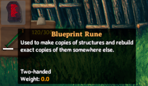

Localization
Localizations are string conversions for language tokens that are bound to in-game objects.
These language tokens are replaced at runtime by their specified localization, and can be thought of as a key value dataset.
An example of a localization token may be $item_stoneAxe, which might have multiple localizations to translate into different languages at runtime.
JVL provides a number of different methods to interface with our localization system, to allow both developers as well as the community at large to provide localizations for both custom items, as well as non supported languages.
Note: This example requires assets to be loaded. The code snippets are taken from our example mod.
Preparing your assets
In order to facilitate our localizations, we must prepare our assets to ensure they are able to accept our localization strings.
The game follows the convention that language tokens are prefixed with a $ to signify the string is a token due for replacement.
Common properties which accept tokens are things such as names, descriptions, and flavourtext.
The following name thereafter must be unique, but can follow any format the user desires.
Convention within the game however states that items follow the $item_{name} $item_{name}_description formats, similarly buildable items are prefixed with $piece_ instead.
Note: These tokens appear in the m_name or m_description member of the ItemDrop component for example and are not to be used as the prefab name.
Adding localization
Jötunn stores all added custom localization in its own CustomLocalization instance per mod. No matter if you let Jötunn automatically load your translation files via side loading or added the translations yourself via code.
Format
The format for localizations is a standard JSON collection as such:
{
"item_evilsword": "Sword of Darkness",
"item_evilsword_desc": "Bringing the light"
}
Note: Other than the tokens you supply with your prefabs or Jötunn's configs, the translation keys should not be prefixed with a $.
Jötunn will replace any $ at the beginning of your translation keys while adding them to it's localization system.
Side loading localizations
Localizations can be provide through loading side by side with your plugin.
The folder structure which will be queried will be Translations/{LanguageName}/{anyname}.json, and can be placed in any sub directory within your plugin.
An example of a path which will be read for localization at run time may be: BepInEx/plugins/JotunnModExample/Assets/Translations/English/backpack.json.
All .json files within such a directory will be iterated through and localizations added for each of those languages.
You can find a list of language names here.
Hardcoding localizations
Localizations may also be hardcoded into your plugin.
This is done by getting your own CustomLocalization instance via the GetLocalization method.
A new instance will be created if none exists yet.
This can be done right inside your mod Awake method, all added content gets also added to the game.
// Your mod's custom localization
private CustomLocalization Localization;
private void AddLocalizations()
{
// Get your mod translation instance
Localization = LocalizationManager.Instance.GetLocalization();
// Add translations for our custom skill
Localization.AddTranslation("English", new Dictionary<string, string>
{
{"skill_TestingSkill", "TestLocalizedSkillName" },
});
// Add translations for the custom item in AddClonedItems
Localization.AddTranslation("English", new Dictionary<string, string>
{
{"item_evilsword", "Sword of Darkness"},
{"item_evilsword_desc", "Bringing the light"},
{"evilsword_shwing", "Woooosh"},
{"evilsword_scroll", "*scroll*"},
{"evilsword_beevil", "Be evil"},
{"evilsword_beevilmessage", ":reee:"},
{"evilsword_effectname", "Evil"},
{"evilsword_effectstart", "You feel evil"},
{"evilsword_effectstop", "You feel nice again"},
});
// Add translations for the custom piece in AddPieceCategories
Localization.AddTranslation("English", new Dictionary<string, string>
{
{ "piece_lul", "Lulz" },
{ "piece_lul_description", "Do it for them" },
{ "piece_lel", "Lölz" },
{ "piece_lel_description", "Härhärhär" },
});
// Add translations for the custom item in AddVariants
Localization.AddTranslation("English", new Dictionary<string, string>
{
{ "lulz_shield", "Lulz Shield" },
{ "lulz_shield_desc", "Lough at your enemies" },
{ "lulz_sword", "Lulz Sword" },
{ "lulz_sword_desc", "Lulz on a stick" },
});
}

Prefabs
It is also possible to package TextAsset's inside of your asset bundles, and to load them into game at runtime via CustomLocalization.AddJsonFile.
In this example, we use our filenames to provide the language which we wish to add the translations for:
private void BlueprintRuneLocalizations()
{
TextAsset[] textAssets = blueprintRuneBundle.LoadAllAssets<TextAsset>();
foreach (var textAsset in textAssets)
{
var lang = textAsset.name.Replace(".json", null);
Localization.AddJsonFile(lang, textAsset.ToString());
}
}

Example JSON file
This is how the JSON file looks like which is deliverd as a TextAsset in the asset bundle for the Blueprint Rune example:
{
"item_blueprintrune": "Blueprint Rune",
"item_blueprintrune_desc": "Used to make copies of structures and rebuild exact copies of them somewhere else.",
"make_blueprint": "Create new blueprint",
"make_blueprint_desc": "Creates a new blueprint of a structure.",
"piece_blueprint": "Blueprint",
"piece_blueprint_desc": "Creates the structure attached to this blueprint."
}
Manual translation of tokens
All tokens on your custom entities added to the game via Jötunn will be translated automatically by the game. There will be instances, though, when you want to translate tokens yourself (e.g. when displaying custom GUI components). CustomLocalization offers a TryTranslate method for that. By using your mod's own CustomLocalization instance it is assured that your token will be replaced with your own translation and that there will be no compatibility problems with other mods using the same tokens as you. If you did not provide a translation for the current players language setting, an english translation is searched. If that also does not exist, the word to translate will be fed to Valheim's own Translation class.
If you did not create your own instance of CustomLocalization you can get an automatically created instance with LocalizationManager.GetLocalization. If you provided translation files with your mod that Jötunn loaded automatically, all custom translation will be in there already.
"Localization added" event
After Jötunn has added all custom Localization to Valheim's own Localization dictionary, it fires an event LocalizationManager.OnLocalizationAdded. You can subscribe to this event if you have code that needs to be sure that all Localization was added before.
Localizable content in Jötunn
Some content added by Jötunn can be translated. The fallback english translation is provided by Jötunn itself. But you can add translations for other languages using this tokens:
- jotunn_cat_<category>: Custom category localization, replace <category> with the lower case name of your added category (e.g. jotunn_cat_mycat).